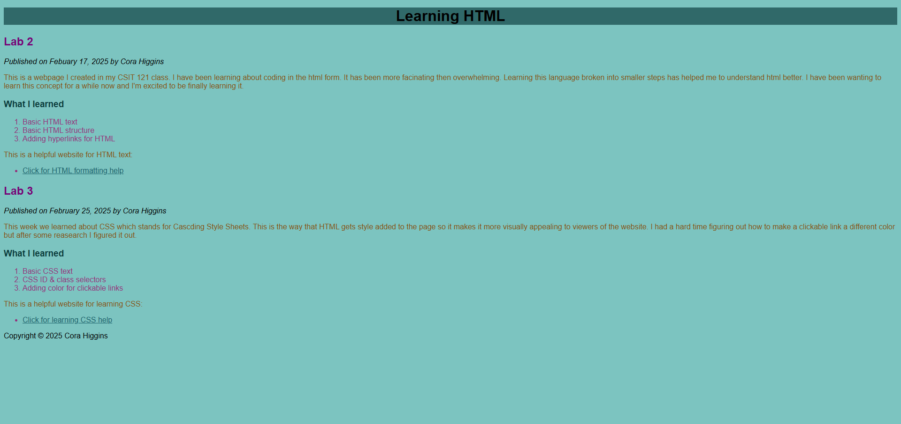
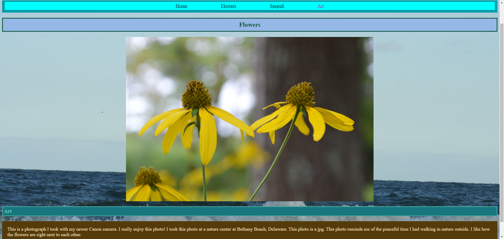

Lab 3: CSS Basics
This lab was one of first few websites I created. For this lab we were learning and implementing CSS for the first time in this course. It was nice to be able to add color and a better design to my website to liven it up. CSS is a big part of helping the website look appealing. This was a very important less for web design.
Lab 4: Visual Media Lab
This lab was one of my favorites. For this lab we were learning how to make a multi page website and add images to our website. This one was challenging getting the image sizes right. I liked this lab since I got to add some of my own photography.